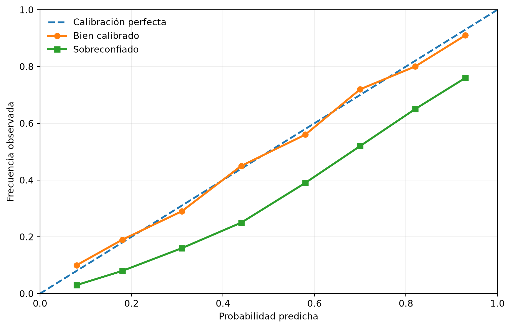
Unidad 3 — Detección, clasificación y diagnóstico asistido
Clase 2 · Incertidumbre y explicabilidad
Ignacio Scarinci
La pregunta de hoy
Un modelo predice 0.98.
¿Eso significa que está 98 % seguro?
No necesariamente.
Objetivos de la clase
Al finalizar deberíamos poder responder cuatro preguntas:
- ¿Qué diferencia hay entre score, probabilidad calibrada e incertidumbre?
- ¿Cómo podemos estimar incertidumbre en redes neuronales?
- ¿Qué nos dicen —y qué no— los mapas de saliencia y Grad-CAM?
- ¿Cómo utilizar estas herramientas para construir sistemas clínicos más seguros?
El mapa conceptual
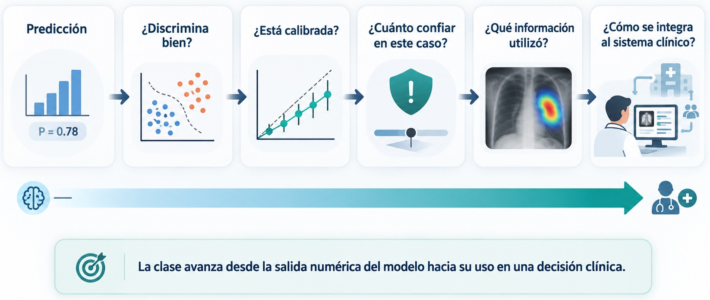
Un score alto puede estar equivocado
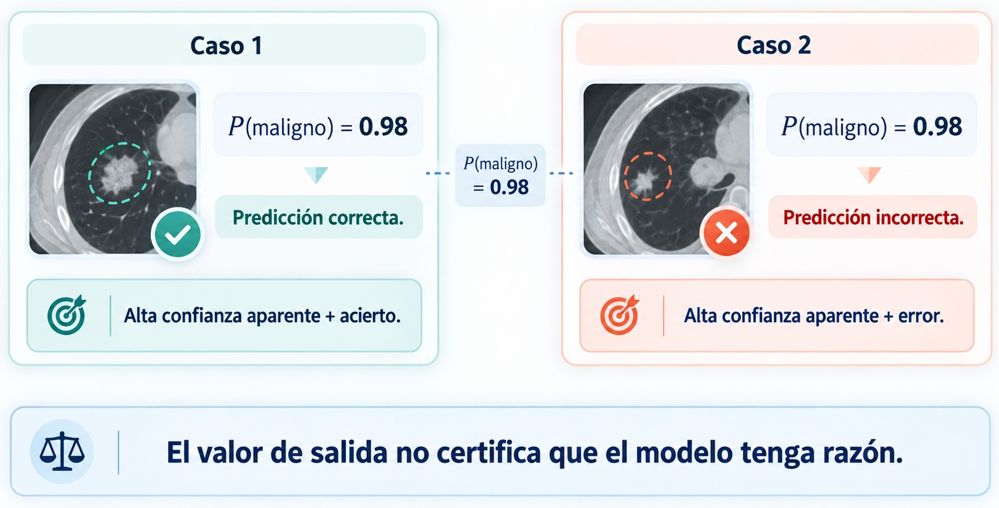
¿De dónde sale esa “probabilidad”?
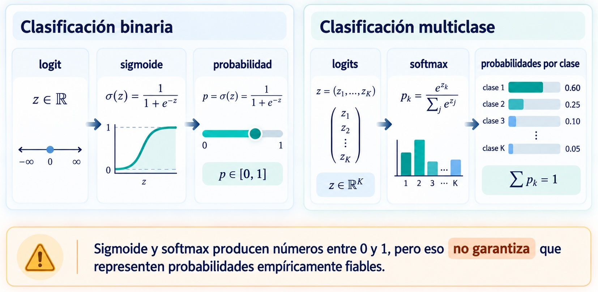
Discriminación ≠ calibración
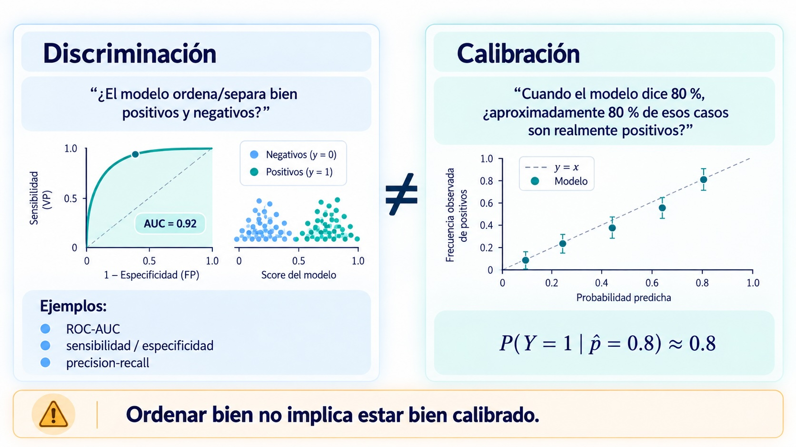
¿Qué significa estar calibrado?
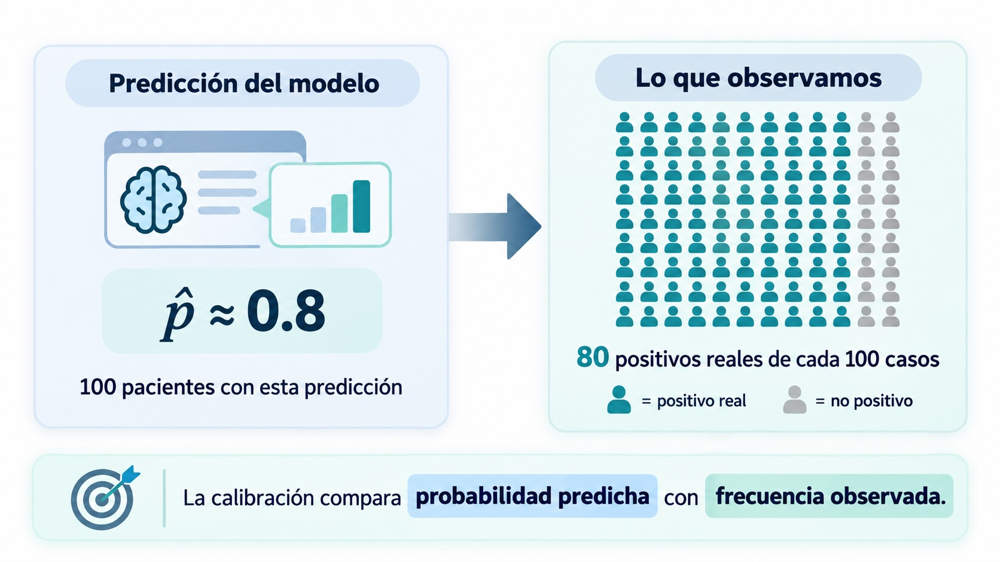
Reliability diagram
Debajo de la diagonal: el modelo suele reportar más confianza de la que merece.
Métricas de calibración
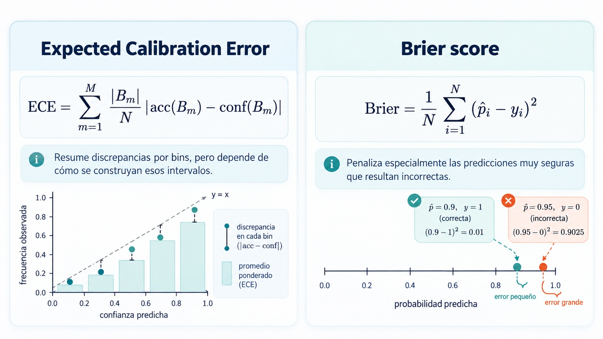
Recalibración: temperature scaling
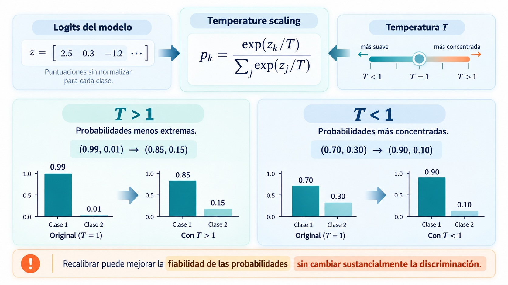
Pausa conceptual
Si un modelo está bien calibrado en promedio…
¿sabemos cuándo una predicción individual es poco confiable?
Esto ya no es solo calibración. Es incertidumbre.
Dos fuentes de incertidumbre
flowchart TB
U["Incertidumbre"]
A["Aleatoria / aleatoric"]
E["Epistémica / epistemic"]
A1["Ambigüedad inherente\nde la observación"]
E1["Conocimiento limitado\ndel modelo"]
U --> A
U --> E
A --> A1
E --> E1
classDef root fill:#E8F0FE,stroke:#1F3A5F,color:#0F172A,stroke-width:2px;
classDef type fill:#E0F2FE,stroke:#0369A1,color:#0F172A,stroke-width:1.5px;
classDef leaf fill:#DCFCE7,stroke:#15803D,color:#0F172A,stroke-width:1.5px;
class U root;
class A,E type;
class A1,E1 leaf;
Incertidumbre aleatoria
Asociada a variabilidad o ambigüedad del dato:
- ruido de adquisición
- bajo contraste
- movimiento y artefactos
- lesión intrínsecamente ambigua
- variabilidad biológica
Idea: aun con muchos datos de entrenamiento, la observación puede seguir siendo ambigua.
Incertidumbre epistémica
Asociada a aquello que el modelo no conoce suficientemente:
- pocos ejemplos relevantes
- regiones poco representadas del espacio de datos
- nueva población
- nuevo equipo o protocolo
- patologías raras
Puede reducirse incorporando datos pertinentes y representativos.
Dos casos clínicos distintos
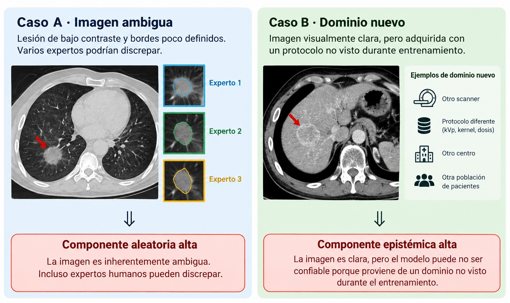
Dataset shift: cuando cambia el mundo
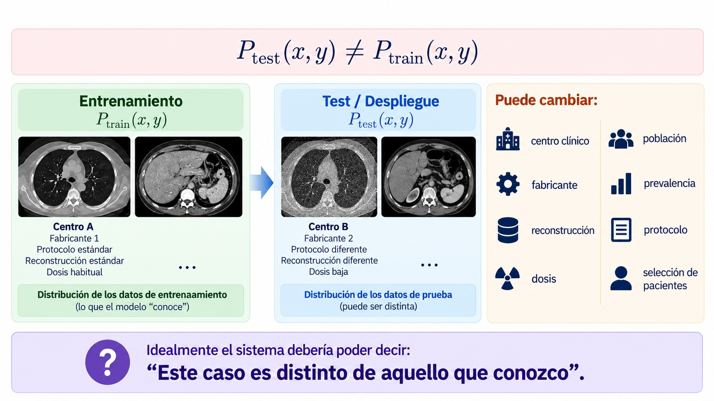
Monte Carlo Dropout
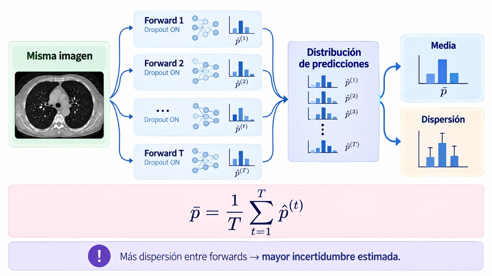
Deep ensembles
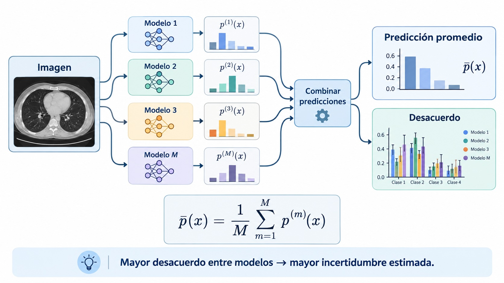
MC Dropout vs ensembles
| MC Dropout | Deep ensembles | |
|---|---|---|
| Idea | múltiples forwards de una red | múltiples redes independientes |
| Costo de entrenamiento | bajo/adicional mínimo | alto |
| Costo de inferencia | múltiples forwards | múltiples modelos |
| Señal de incertidumbre | variación entre máscaras | desacuerdo entre modelos |
| Uso práctico | sencillo de incorporar | muy competitivo, pero costoso |
Warning
Ninguno de los dos métodos garantiza detectar todos los casos OOD ni produce una “incertidumbre perfecta”.
Incertidumbre como herramienta de seguridad
flowchart LR
A["Imagen"] --> B["Modelo"]
B --> C["Predicción"]
B --> D["Incertidumbre"]
D --> E{"¿u ≥ τ?"}
E -->|"No"| F["Aceptar / automatizar"]
E -->|"Sí"| G["Revisión por experto"]
La incertidumbre es útil cuando modifica el workflow, no cuando solo agrega otro número a la pantalla.
Cobertura versus riesgo
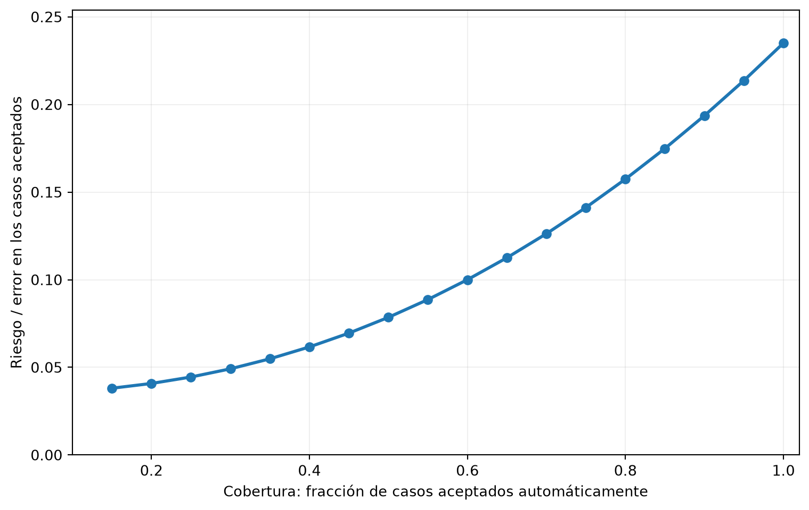
Ser más selectivo puede reducir el riesgo, pero también reduce la automatización.
Tres preguntas distintas

De la confianza a la explicación
Supongamos ahora:
\[ P(\text{maligno})=0.92 \]
y además estimamos una incertidumbre baja.
¿Qué información de la imagen utilizó el modelo para producir esa predicción?
Interpretabilidad y explicabilidad
Modelo interpretable
Su mecanismo puede inspeccionarse directamente.
\[ y=w_1x_1+w_2x_2+b \]
Ejemplo: regresión lineal/logística.
Modelo explicable
El modelo es complejo y aplicamos herramientas adicionales para analizar su comportamiento.
Ejemplo: CNN + Grad-CAM.
Métodos post-hoc
flowchart LR
A["Imagen"] --> B["Modelo entrenado"]
B --> C["Predicción"]
A --> D["Método post-hoc"]
B --> D
D --> E["Mapa / explicación"]
Warning
El método de explicación analiza un modelo ya entrenado; no necesariamente cambia cómo el modelo toma decisiones.
Mapas de saliencia
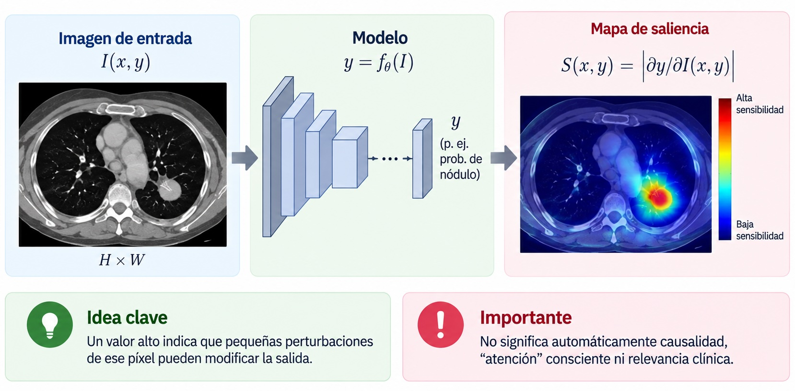
Grad-CAM: idea general
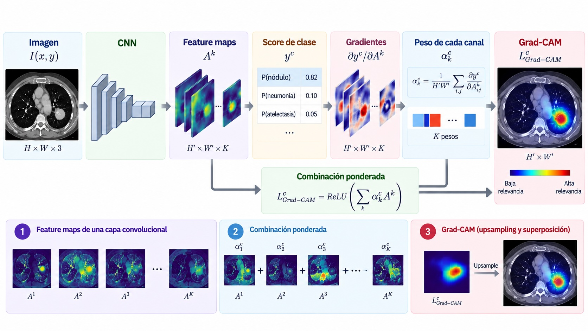
Explicabilidad como herramienta de validación
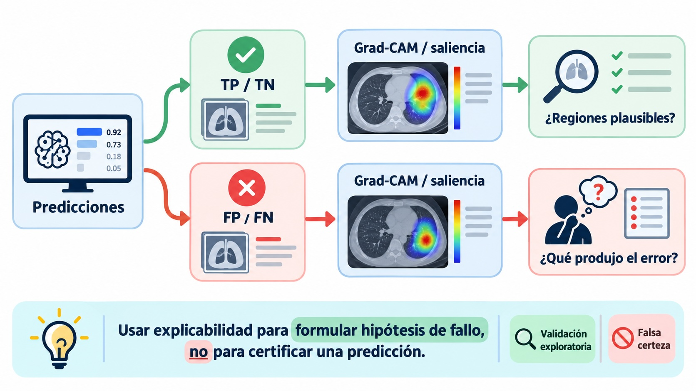
Grad-CAM no equivale a causalidad
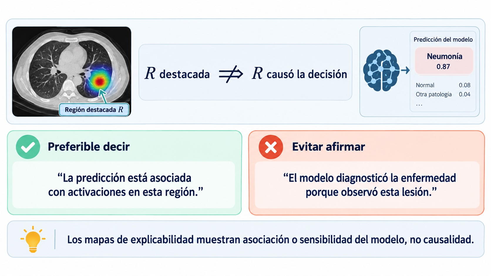
Occlusion sensitivity
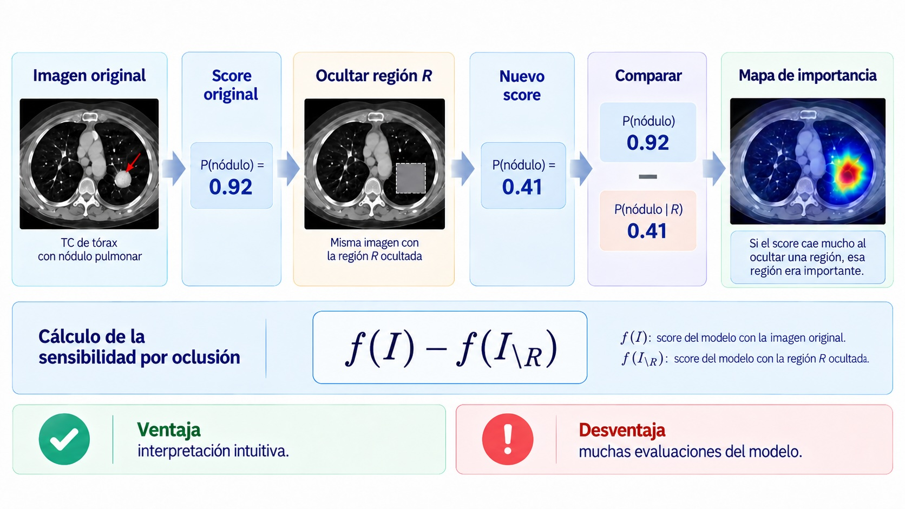
Sanity checks

Comparación rápida de métodos
| Método | Pregunta aproximada | Ventaja | Limitación |
|---|---|---|---|
| Saliency | ¿Dónde es sensible localmente la salida? | Simple | Puede ser ruidoso |
| Grad-CAM | ¿Qué regiones de feature maps apoyan una clase? | Intuitivo | Baja resolución |
| Occlusion | ¿Qué pasa si retiro esta región? | Fácil de razonar | Costoso |
La elección depende de la pregunta, no solo de la disponibilidad del método.
Explicabilidad ≠ confianza
“El Grad-CAM parece clínicamente razonable.
Entonces podemos confiar en la predicción.”
Conclusión incorrecta.
\[ \text{explicabilidad}\neq\text{incertidumbre}\neq\text{validación} \]
Las tres preguntas de la unidad
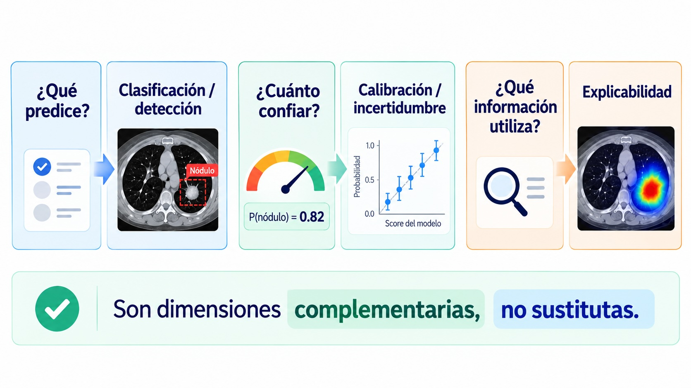
Un modelo todavía no es un sistema clínico
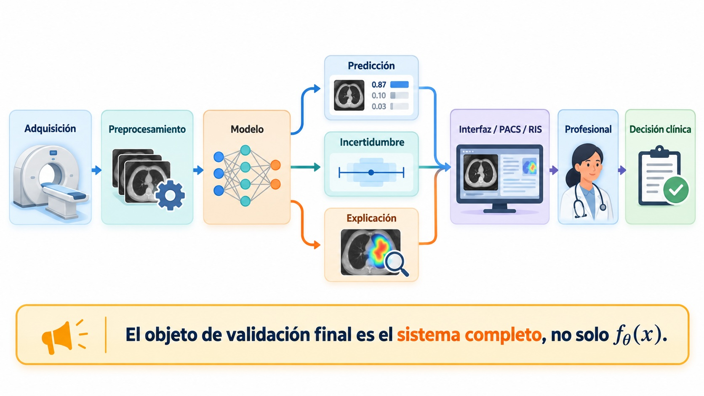
Cierre
1. Un score alto no equivale a certeza.
2. Discriminación, calibración e incertidumbre responden preguntas diferentes.
3. MC Dropout y ensembles permiten aproximar incertidumbre, pero no resuelven universalmente OOD.
4. Grad-CAM y saliency sirven para auditar comportamiento, no para demostrar causalidad.
5. La utilidad clínica aparece cuando estas herramientas modifican el workflow y reducen riesgo.
Próximo paso
¿Cómo pasamos de un modelo aislado
a un sistema de diagnóstico asistido por computadora?
CAD · integración · validación clínica